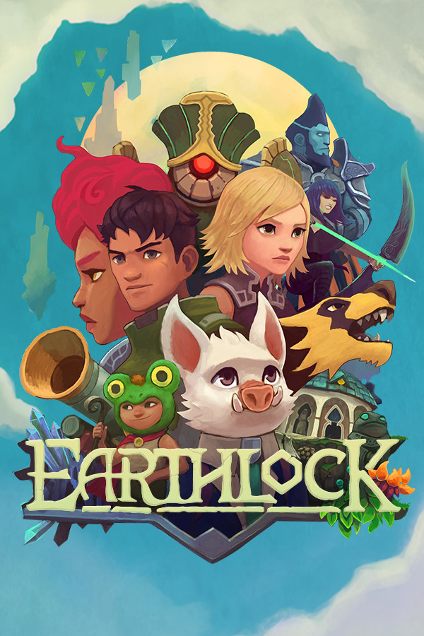

Earthlock
Earthlock
Details
|  | |
| Playtime | Not Played |
| Last Activity | Never |
| Added | 2/22/2021 21:14:28 |
| Modified | 12/2/2021 23:18:19 |
| Completion Status | Not Played |
| Library | Amazon Games |
| Source | Amazon |
| Platform | PC (Windows) |
| Release Date | 3/8/2018 |
| Community Score | 76 |
| Critic Score | |
| User Score | |
| Genre | Adventure Indie Role-playing (RPG) Strategy |
| Developer | Snowcastle Games |
| Publisher | Snowcastle Games |
| Feature | Single Player |
| Links | Steam Official Website GOG |
| Tag | |
Description
Be the first to see Earthlock 2 announcements by signing up to our Newsletter : https://www.snowcastlegames.com/earthlock2

Don’t let the cute cartoonish art style fool you. This game is challenging. True fans of the JRPG genre will love it, casual players may want to look elsewhere. Invest the time, and EARTHLOCK will reward you with a depth in gameplay that will test the most strategic of players.

Embark on a journey to save the beautiful world of Umbra, a harsh planet that stopped spinning thousands of cycles ago. What started as a mission to rescue Amon’s uncle from the clutches of an ancient cult, soon spirals into an adventure that was centuries in the making. You must bring together this group of unlikely heroes to stop the ruinous past from repeating itself.

Explore the magical world of Umbra and discover places lost in the past to uncover the secrets of the Earthlock Artifact.

Unite this band of heroes, all with their own journeys of self discovery and venture into the world to save the planet from the growing evil within. Mix up your strategy to beat your enemies using two different stances per character, and build your characters' battle bond to unleash powerful abilities or unique perks.

Dive into turn based battles on arenas in the grand tradition to explore the depths of tactical choices needed to survive the fierce boss fights.

Take a break from adventure and escape to your own home island. Here you can harvest magical ingredients and craft weapons, helpful items and perks.
Gather seeds to grow amazing plants both on the island and elsewhere. Many provide necessary ingredients to make your way around the world. Some, when they ripen, in stead produce living off spring, cute little kittens and other creatures that wander about for pure enjoyment.

With plenty of stuff to do you can lose yourself in the Overworld. Scavenge for items, pick flowers, catch cute Bibis or dig up treasures to trade or take back to Plumpet Island to concoct the strangest potions and ammunitions giving you a leg up in your next battle.

EARTHLOCK features a unique talent board system; a refreshing take on the classic skill tree. This board gives you complete control over your player's strengths and weaknesses. You can swap talents on and off the board, allowing you to finely tune each character to your desired playing style. The talent board also features “Perk Talents” which you can craft and collect in the world, giving you special combat skills and abilities.
Extended and upgraded, this is in many respects a brand new game.
Keeping all the best parts from EARTHLOCK: Festival of Magic, we have spent the last year improving them in every way while adding loads of new stuff:
⁃ Craftable weapons and equipment
⁃ New abilities in the overworld
⁃ Numerous new side quests
⁃ New scenes, new creatures and new NPCs
⁃ In addition to all the strange plants you now can grow trees to bring kittens and other cute critters into the world
⁃ Treasure Maps to discover more treasures
⁃ The ability to sell as well as buy stuff
⁃ Loads of new animations, story additions, smarter NPCs and tweaks of every kind to make the game even more engrossing, enjoyable and replayable!
For the best EARTHLOCK experience, we recommend using a game controller.
Don’t let the cute cartoonish art style fool you. This game is challenging. True fans of the JRPG genre will love it, casual players may want to look elsewhere. Invest the time, and EARTHLOCK will reward you with a depth in gameplay that will test the most strategic of players.
Discover Your Hero Within
Embark on a journey to save the beautiful world of Umbra, a harsh planet that stopped spinning thousands of cycles ago. What started as a mission to rescue Amon’s uncle from the clutches of an ancient cult, soon spirals into an adventure that was centuries in the making. You must bring together this group of unlikely heroes to stop the ruinous past from repeating itself.
The World
Explore the magical world of Umbra and discover places lost in the past to uncover the secrets of the Earthlock Artifact.
The Heroes
Unite this band of heroes, all with their own journeys of self discovery and venture into the world to save the planet from the growing evil within. Mix up your strategy to beat your enemies using two different stances per character, and build your characters' battle bond to unleash powerful abilities or unique perks.
The Battles
Dive into turn based battles on arenas in the grand tradition to explore the depths of tactical choices needed to survive the fierce boss fights.
Your Own Secret Island
Take a break from adventure and escape to your own home island. Here you can harvest magical ingredients and craft weapons, helpful items and perks.
Grow Stuff
Gather seeds to grow amazing plants both on the island and elsewhere. Many provide necessary ingredients to make your way around the world. Some, when they ripen, in stead produce living off spring, cute little kittens and other creatures that wander about for pure enjoyment.
The Overworld
With plenty of stuff to do you can lose yourself in the Overworld. Scavenge for items, pick flowers, catch cute Bibis or dig up treasures to trade or take back to Plumpet Island to concoct the strangest potions and ammunitions giving you a leg up in your next battle.
The Talent Table
EARTHLOCK features a unique talent board system; a refreshing take on the classic skill tree. This board gives you complete control over your player's strengths and weaknesses. You can swap talents on and off the board, allowing you to finely tune each character to your desired playing style. The talent board also features “Perk Talents” which you can craft and collect in the world, giving you special combat skills and abilities.
If you have played EARTHLOCK: Festival of Magic
Extended and upgraded, this is in many respects a brand new game.
Keeping all the best parts from EARTHLOCK: Festival of Magic, we have spent the last year improving them in every way while adding loads of new stuff:
⁃ Craftable weapons and equipment
⁃ New abilities in the overworld
⁃ Numerous new side quests
⁃ New scenes, new creatures and new NPCs
⁃ In addition to all the strange plants you now can grow trees to bring kittens and other cute critters into the world
⁃ Treasure Maps to discover more treasures
⁃ The ability to sell as well as buy stuff
⁃ Loads of new animations, story additions, smarter NPCs and tweaks of every kind to make the game even more engrossing, enjoyable and replayable!
For the best EARTHLOCK experience, we recommend using a game controller.